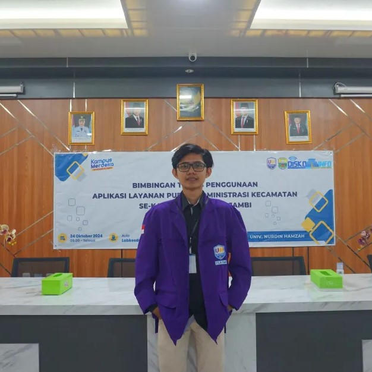

Biodata
Nama : Muhammad Adrian Maulana
Tempat, Tanggal Lahir : 15 Juni 2003
Alamat : Jl.SoekarnoHatta No.46 Kota Jambi
Telepon : 081539864015
Email : 15m.adrianmaulana@gmail.com
Riwayat Pendidikan
- [2015 - 2017] SMP Negeri 4 Kota Jambi
- [2018 - 2021] SMK Negeri 2 Kota Jambi
- [2022 - 2026] S1 - Universitas Nurdin Hamzah (UNH)
Riwayat Pekerjaan
- [2019] CV. Chandra Adv (PKL)
- [2021] Kurir Shopee
- [2022] Caffe Senyala (Helper Koki)
- [2026 - 2028] FrontEnd developer di Pt.Pertamina
Riwayat Organisasi
- [2022 - 2026] Anggota di Himpunan Mahasiswa Sistem Informasi
Sertifikasi & Workshop
- Pengabdian Kepada Masyarakat (PKM) "Integrasi Sistem Rekam Medis Elektronik Pada Fasyankes untuk Mendukung Program Ekonomi Digital kesehatan Nasional" - 2024
- FROM ZERO TO HERO IN WEB DEVELOPMENT - 2024
- Cyber Security Fundamentals - CompTIA Security+ - 2024
Karya Tulis / Produk / Lainnya
- Inventory Management System - Mendesain sistem pengelolaan inventaris berbasis web dengan fitur pelacakan stok secara real-time.